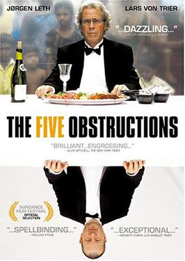

Lars von Trier
2003
103 minutes
You've always been curious to watch this film, which sounded like a fascinating experience. You'd seen the original Jørgen Leth film on UbuWeb at some point before and have been eager to see what kinds of twisted things Lars von Trier might make him do with it.
You watch as the successive remakes unfold. The frantic pace of a film with no more than twelve frames per shot is dizzying and funny, and the cartoon version is very clever. You sympathize with the cruelest obstruction of all--complete freedom--which is actually done as punishment for "failing" one of the tasks. This makes you laugh bitterly, as you've always found a blank page to be the most intimidating restriction of all for your own attempts at artistic endeavors. For most of your own projects, you've usually set for yourself some kind of bizarre restriction. For example, restricting poems to limerick form or sonnet form or forcing yourself to take inspiration from Cannibal Corpse song titles. The thought of a blank page gives you shivers, and it's particularly horrifying to think of having to redo something you've already done without any limits.
You look back mournfully on a long lost short story you wrote in college, one of your first. You wrote most of it while holding down the cashier station at the campus bookstore. The subject was two young men watching The Price Is Right while sitting on a dorm couch. The main character was a rather meek, skinny nerd who was barely tolerating the other young man, a fat slob who was the campus pariah. The slob provided an idiotic running commentary about what was unfolding on the TV screen. The main character holds his emotions in check as long as he can before exploding in a burst of impotent rage at his fellow viewer. He feels a rush at the joy of finally asserting himself, but this is quickly ruined. The pariah finds his outburst hilarious and absurd and mocks him for his sudden display of emotion. The protagonist ultimately slinks away feeling devastatingly ashamed and humiliated.
It should be noted that this story was not at all autobiographical, though it was inspired by real people. The ultimate fate of the pariah in the story, which is mentioned as an aside, was the same as the fate of his inspiration--killed in a car accident during a campus recess in his freshman year.
This story was ultimately lost to the drawer, and your efforts over the year of locating a digital copy of it have been fruitless. The idea of being forced to rewrite it from scratch is particularly horrifying.
As penance for watching a Lars von Trier film, you resolve to listen to some Björk later in the evening before choosing which movie to watch next.
Time to choose something different: